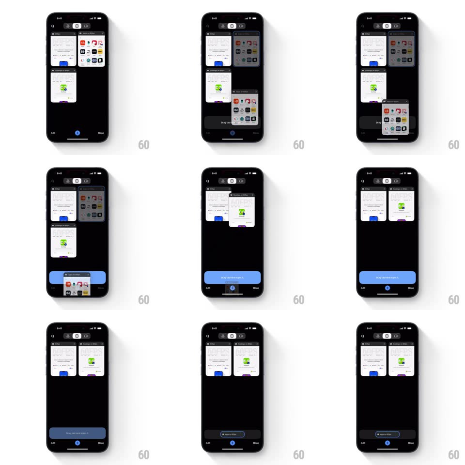

Media
Frame-by-frame

Rebuild this interaction 1:1: Chrome mobile's drag-tab-to-pin - in the tab grid, dragging a tab card reveals a "Drag tab here to pin it" target bar at the bottom; hovering over it expands the blue target, and dropping flies the card into the pinned section at the top of the grid with a "Tab pinned" confirmation.

Rebuild this interaction 1:1: Chrome mobile's drag-tab-to-pin - in the tab grid, dragging a tab card reveals a "Drag tab here to pin it" target bar at the bottom; hovering over it expands the blue target, and dropping flies the card into the pinned section at the top of the grid with a "Tab pinned" confirmation.
## Integration
Integration: stack-agnostic spec - springs given as stiffness/damping, timed motions as duration + curve; map every value to your framework and animation library of choice.
## Scene
Dark tab-switcher grid: two-column tab cards, top bar with tab count and actions, Edit / Done footer. During a drag, a bottom drop bar ("Drag tab here to pin it") appears; pinned tabs collect in a top row.
## Motion spec
Pattern: drag-and-drop with an expanding drop target.
- Long-press: the tab card lifts (scale 1.03 + shadow, spring ~380/22, 180ms) and follows the finger 1:1; the grid dims slightly.
- The pin target bar slides up from the bottom (spring ~360/24, 250ms) as the drag starts.
- Hover over the target: the bar expands (height +40%, background fills blue, spring ~340/22, 200ms) and the card shrinks a touch (scale 0.9) as if being accepted.
- Drop: the card flies from the drop point into the pinned row at the top (arc path, spring ~320/24, 350ms) while the bar retracts; a confirmation pill ("Tab pinned") fades in and out (1.2s).
- Drop anywhere else: the card springs back to its grid slot (spring ~360/26, 300ms).
## Calibration
- The target only exists during a drag - it appears with the lift, leaves with the drop.
- The blue fill is the hover state - an unmistakable "release now" signal.
## Reduced motion
Card moves without lift scale; drop teleports with a 200ms fade.
## Don't miss
- The pinned tab lands in a dedicated top row, not back in the general grid.
- The card's flight path to the pinned row is an arc, not a straight line.